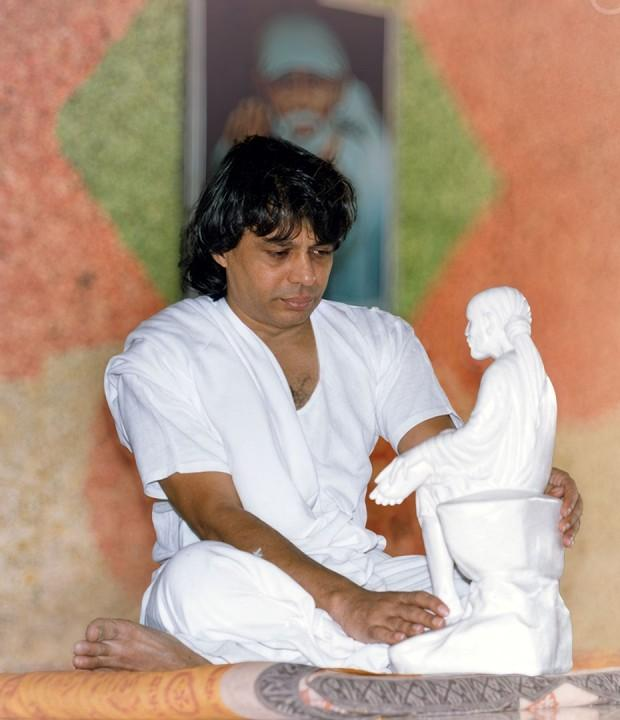

132 devotional music videos
Newest dated videos first
Audio Library
13 albums · 208 tracks

Songs, chants, Namam audio tracks, and darshan videos with music.
Use quotation marks to search an exact phrase.
132 devotional music videos
Newest dated videos first
13 albums · 208 tracks